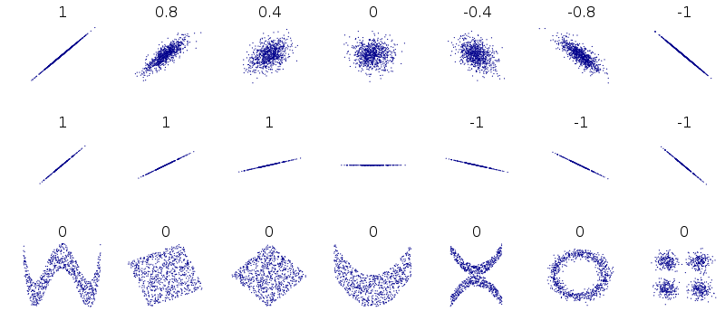

Lecture 15 (4/29/2022)¶
Announcements
Pset 4 will be released today, due next Friday 5/6
Last time we covered:
Evaluating regression: \(R^2\), out-of-sample prediction, parameter interpretation
Today’s agenda:
Polynomial regression, multiple regression
import numpy as np
import pandas as pd
import matplotlib.pyplot as plt
import seaborn as sns
# Read in and prepare the data we were using last time
mpg = sns.load_dataset('mpg')
mpg_clean = mpg.dropna().reset_index(drop = True)
mpg_clean
| mpg | cylinders | displacement | horsepower | weight | acceleration | model_year | origin | name | |
|---|---|---|---|---|---|---|---|---|---|
| 0 | 18.0 | 8 | 307.0 | 130.0 | 3504 | 12.0 | 70 | usa | chevrolet chevelle malibu |
| 1 | 15.0 | 8 | 350.0 | 165.0 | 3693 | 11.5 | 70 | usa | buick skylark 320 |
| 2 | 18.0 | 8 | 318.0 | 150.0 | 3436 | 11.0 | 70 | usa | plymouth satellite |
| 3 | 16.0 | 8 | 304.0 | 150.0 | 3433 | 12.0 | 70 | usa | amc rebel sst |
| 4 | 17.0 | 8 | 302.0 | 140.0 | 3449 | 10.5 | 70 | usa | ford torino |
| ... | ... | ... | ... | ... | ... | ... | ... | ... | ... |
| 387 | 27.0 | 4 | 140.0 | 86.0 | 2790 | 15.6 | 82 | usa | ford mustang gl |
| 388 | 44.0 | 4 | 97.0 | 52.0 | 2130 | 24.6 | 82 | europe | vw pickup |
| 389 | 32.0 | 4 | 135.0 | 84.0 | 2295 | 11.6 | 82 | usa | dodge rampage |
| 390 | 28.0 | 4 | 120.0 | 79.0 | 2625 | 18.6 | 82 | usa | ford ranger |
| 391 | 31.0 | 4 | 119.0 | 82.0 | 2720 | 19.4 | 82 | usa | chevy s-10 |
392 rows × 9 columns
Review: Evaluating linear regression¶
In last lecture, we talked about three ways of checking that your regression fit the data well.
\(R^2\) coefficient of determination
Out of sample prediction accuracy
High confidence (and useful) parameter estimates
Let’s start by running through each of these in a little more detail since we didn’t get much time to discuss them.
\(R^2\), the coefficient of determination¶
\( R^2 = 1 - \dfrac{RSS}{TSS} \)
\( RSS = \sum_{i=1}^{n}{(y_i - \hat{y_i})}^2 \)
\( TSS = \sum_{i=1}^{n}{(y_i - \bar{y})}^2 \)
\(R^2\) ranges between 0 and 1 and can be thought of as the percentage of variance in \(y\) that our model explains.
To understand how it works, remember that RSS is 0 when the regression perfectly predicts our data and RSS is equal to TSS when we just guess \(\bar{y}\) for every data point \(y_i\) (worst case for our regression).
# The scikit-learn LinearRegression class surfaces a function called `score` that computes R^2
from sklearn.linear_model import LinearRegression
# Format values
x_vals = np.array(mpg_clean['weight']).reshape(len(mpg_clean['weight']), 1)
y_vals = np.array(mpg_clean['horsepower'])
# Fit regression
mod = LinearRegression().fit(X = x_vals, y = y_vals)
rsq_mod = mod.score(X = x_vals, y = y_vals) # R^2 value
rsq_mod
0.74742549968982
Last time, we showed how to calculate the \(R^2\) value by hand using the LinearRegression predict function.
If you’re feeling hazy on \(R^2\), I recommend going back to the code from that lecture and going through the part where we calculate \(R^2\).
Out of sample prediction¶

Motivation
If our model is the right fit to our data, it should predict other data from the same underlying distribution or generative process pretty well.
How to check this
There are a lot of ways to test out of sample data which we’ll get into in more detail on Monday, but the high-level approach is almost always:
Randomly select a subset of your original data (20-25%) and set it aside as test data. The remaining data is your training data.
Fit your model to the training data only.
See how well your fitted model predicts the test data. Compare it to the predictions on the training data with something like Mean Squared Error (MSE).
Often, repeat steps 1-3 in various ways (more on that later).
Comparing train and test performance
Step 3 above is critical. One common approach is to use Mean Squared Error (MSE):
\( MSE = \dfrac{1}{n - 2} \sum_{i=1}^{n}{(y_i - \hat{y_i})}^2 = \dfrac{1}{n - 2} \sum_{i=1}^{n}{\epsilon_i}^2 \)
This tells you, on average, how close your model was to the true value across all the data points (the \(n-2\) is specific to linear regression where we have two parameters, \(\beta_0\) and \(\beta_1\), so \(n-2\) is our degrees of freedom).
from sklearn.model_selection import train_test_split # Use the sklearn `train_test_split` to make this easy
from sklearn.metrics import mean_squared_error # Use the sklearn `mean_squared_error` for quick MSE calculation
# Randomly sample 25% of our data points to be test data
xtrain, xtest, ytrain, ytest = train_test_split(x_vals,
y_vals,
test_size = 0.25,
# random_state = 500
)
# Fit the model on the training data
mod_tr = LinearRegression().fit(X = xtrain, y = ytrain)
# Generate model predictions for the test data
mod_preds_test = mod_tr.predict(X = xtest)
# Compare MSE for the model predictions on train and test data
mod_preds_train = mod_tr.predict(X = xtrain)
mse_train = mean_squared_error(y_true = ytrain, y_pred = mod_preds_train)
mse_train # Note this divides by n rather than n-2 but that's not super important for our purposes
mse_test = mean_squared_error(y_true = ytest, y_pred = mod_preds_test)
mse_test
print("Training MSE: {} \nTest MSE: {}".format(mse_train, mse_test))
Training MSE: 299.61077052468573
Test MSE: 596.445782974599
Just for fun, try running the code above several times and look at how different the values are.
More on this next week…
Parameter estimates¶
The criteria above are mostly concerned with whether we’re doing a good job predicting our \(y\) values with this model.
In many cases, part of what we’re concerned with isn’t just how well we predict our data, but what kind of relationship our model estimates between \(x\) and \(y\).
How large or small is the slope?
How confident are we in the estimate?
To assess this, we typically compute confidence bounds on the parameter estimates (95% confidence interval or standard error) and compare them to a null value of 0 using \(t\) tests.
Linear regression parameter estimates are most useful when they are high confidence and significantly different from 0.
The sklearn LinearRegression class doesn’t include functions for this sort of analysis, but other tools like the statsmodels regression class do.
import statsmodels.formula.api as smf
# Fit the model
results = smf.ols('horsepower ~ weight', data = mpg_clean).fit()
# View the results
results.summary()
| Dep. Variable: | horsepower | R-squared: | 0.747 |
|---|---|---|---|
| Model: | OLS | Adj. R-squared: | 0.747 |
| Method: | Least Squares | F-statistic: | 1154. |
| Date: | Tue, 14 Jun 2022 | Prob (F-statistic): | 1.36e-118 |
| Time: | 18:22:25 | Log-Likelihood: | -1717.0 |
| No. Observations: | 392 | AIC: | 3438. |
| Df Residuals: | 390 | BIC: | 3446. |
| Df Model: | 1 | ||
| Covariance Type: | nonrobust |
| coef | std err | t | P>|t| | [0.025 | 0.975] | |
|---|---|---|---|---|---|---|
| Intercept | -12.1835 | 3.570 | -3.412 | 0.001 | -19.203 | -5.164 |
| weight | 0.0392 | 0.001 | 33.972 | 0.000 | 0.037 | 0.041 |
| Omnibus: | 83.255 | Durbin-Watson: | 1.014 |
|---|---|---|---|
| Prob(Omnibus): | 0.000 | Jarque-Bera (JB): | 312.937 |
| Skew: | 0.892 | Prob(JB): | 1.11e-68 |
| Kurtosis: | 6.997 | Cond. No. | 1.13e+04 |
Notes:
[1] Standard Errors assume that the covariance matrix of the errors is correctly specified.
[2] The condition number is large, 1.13e+04. This might indicate that there are
strong multicollinearity or other numerical problems.
Problems with simple linear regression¶
 Disclaimer: this figure (from wikipedia) shows correlation values associated with these datasets, but the limitations of correlation in capturing these patterns holds for linear regression as well.
Polynomial regression: non-linear relationship between \(x\) and \(y\)¶
Non-linear data can take all kinds of forms, though there are probably a few that are most common.
Let’s take a look at a simple example from our cars dataset:
sns.lmplot(data = mpg_clean, x = "horsepower", y = "mpg")
<seaborn.axisgrid.FacetGrid at 0x7f82186ecfd0>
Does this data have a linear relationship between \(x\) and \(y\)? Seems like it might be more complicated.
Enter: polynomial regression!
Polynomial regression: overview¶
Polynomial regression is just like linear regression except that instead of fitting a linear function to the data, we fit higher degree polynomials.
Previously, our simple linear regression model assumed that our data \((x_i, y_i)\) could be described as:
\(y_i = \beta_0 + \beta_1 x_i + \epsilon_i\)
The OLS process estimates values for \(\beta_0\) and \(\beta_1\) that correspond to a straight line that minimizes \(\epsilon_i\).
With polynomial regression, we extend this basic model to include functions of the form:
\(y_i = \beta_0 + \beta_1 x_i + \beta_2 x_i^2 + \epsilon_i\) for degree 2 polynomial regression,
\(y_i = \beta_0 + \beta_1 x_i + \beta_2 x_i^2 + \beta_3 x_i^3 + \epsilon_i\) for degree 3 polynomial regression,
\(y_i = \beta_0 + \beta_1 x_i + \beta_2 x_i^2 + \beta_3 x_i^3 + \ ... \ + \beta_n x_i^n + \epsilon_i\) for degree n polynomial regression.
Even though this seems much more complex, polynomial regression uses the same Ordinary Least Squares (OLS) parameter estimation as simple regression. You can think of simple linear regression as a special case of polynomial regression.
This gives us immense flexibility to fit more complex functions to our data. Some of the data illustrated at the top of this section can only be modeled using more complex polynomials (see example below as well).
CAUTION: most of the time you don’t need polynomials to capture your data. Bad things happen when you use them for data that doesn’t have an underlying non-linear structure. More on this on Monday.
Polynomial regression in python¶
We can use the numpy polyfit library to fit 2nd and 3rd order polynomials to this data
(Note: this is probably the simplest method, but there’s code to use the familiar scikit learn approach as well below).
# We can fit higher order polynomial functions to our data rather than just a linear function
deg1_fits = np.polyfit(mpg_clean.horsepower, mpg_clean.mpg, 1)
deg2_fits = np.polyfit(mpg_clean.horsepower, mpg_clean.mpg, 2)
deg3_fits = np.polyfit(mpg_clean.horsepower, mpg_clean.mpg, 3)
p1 = np.poly1d(deg1_fits)
p2 = np.poly1d(deg2_fits)
p3 = np.poly1d(deg3_fits)
# What do the functions fitted above predict for our data?
preds = mpg_clean.loc[:, ('horsepower', 'mpg')] #
preds['deg1_pred'] = p1(preds['horsepower'])
preds['deg2_pred'] = p2(preds['horsepower'])
preds['deg3_pred'] = p3(preds['horsepower'])
preds
preds_long = preds.melt(
id_vars = ['horsepower', 'mpg']
)
preds
| horsepower | mpg | deg1_pred | deg2_pred | deg3_pred | |
|---|---|---|---|---|---|
| 0 | 130.0 | 18.0 | 19.416046 | 17.091508 | 17.153421 |
| 1 | 165.0 | 15.0 | 13.891480 | 13.480156 | 13.782683 |
| 2 | 150.0 | 18.0 | 16.259151 | 14.658717 | 14.890157 |
| 3 | 150.0 | 16.0 | 16.259151 | 14.658717 | 14.890157 |
| 4 | 140.0 | 17.0 | 17.837598 | 15.752059 | 15.904046 |
| ... | ... | ... | ... | ... | ... |
| 387 | 86.0 | 27.0 | 26.361214 | 25.908837 | 25.774667 |
| 388 | 52.0 | 44.0 | 31.727935 | 35.985609 | 36.424392 |
| 389 | 84.0 | 32.0 | 26.676903 | 26.422834 | 26.298564 |
| 390 | 79.0 | 28.0 | 27.466127 | 27.750895 | 27.662364 |
| 391 | 82.0 | 31.0 | 26.992593 | 26.946675 | 26.834765 |
392 rows × 5 columns
# First, our original data
sns.scatterplot(data = preds_long,
x = 'horsepower',
y = 'mpg',
color = 'm',
alpha = 0.1
)
# Now add in our lines
sns.lineplot(data = preds_long,
x = 'horsepower',
y = 'value',
hue = 'variable'
)
<AxesSubplot:xlabel='horsepower', ylabel='mpg'>
Here’s the solution using scikit learn; it’s a bit more complicated, though it does let you keep using the LinearRegression class
from sklearn.preprocessing import PolynomialFeatures
x_vals = np.array(mpg_clean['horsepower']).reshape(len(mpg_clean['horsepower']), 1)
y_vals = np.array(mpg_clean['mpg'])
preds = mpg_clean.loc[:, ('horsepower', 'mpg')]
# Simple linear model
mod1 = LinearRegression().fit(x_vals, y_vals)
# 2nd order polynomial
poly2 = PolynomialFeatures(degree = 2, include_bias = False) # need `include_bias` = False
x2_features = poly2.fit_transform(x_vals)
mod2 = LinearRegression().fit(x2_features, y_vals)
# 3rd order polynomial
poly3 = PolynomialFeatures(degree = 3, include_bias = False)
x3_features = poly3.fit_transform(x_vals)
mod3 = LinearRegression().fit(x3_features, y_vals)
mod2.intercept_
# mod2.coef_
# mod3.coef_
56.90009970211295
# Add predictions for each model so we can view how it does
preds['deg1_pred'] = mod1.predict(x_vals)
preds['deg2_pred'] = mod2.predict(x2_features)
preds['deg3_pred'] = mod3.predict(x3_features)
preds
| horsepower | mpg | deg1_pred | deg2_pred | deg3_pred | |
|---|---|---|---|---|---|
| 0 | 130.0 | 18.0 | 19.416046 | 17.091508 | 17.153421 |
| 1 | 165.0 | 15.0 | 13.891480 | 13.480156 | 13.782683 |
| 2 | 150.0 | 18.0 | 16.259151 | 14.658717 | 14.890157 |
| 3 | 150.0 | 16.0 | 16.259151 | 14.658717 | 14.890157 |
| 4 | 140.0 | 17.0 | 17.837598 | 15.752059 | 15.904046 |
| ... | ... | ... | ... | ... | ... |
| 387 | 86.0 | 27.0 | 26.361214 | 25.908837 | 25.774667 |
| 388 | 52.0 | 44.0 | 31.727935 | 35.985609 | 36.424392 |
| 389 | 84.0 | 32.0 | 26.676903 | 26.422834 | 26.298564 |
| 390 | 79.0 | 28.0 | 27.466127 | 27.750895 | 27.662364 |
| 391 | 82.0 | 31.0 | 26.992593 | 26.946675 | 26.834765 |
392 rows × 5 columns
preds_long = preds.melt(
id_vars = ['horsepower', 'mpg']
)
preds
# First, our original data
sns.scatterplot(data = preds_long,
x = 'horsepower',
y = 'mpg',
color = 'm',
alpha = 0.1
)
# Now add in our lines
sns.lineplot(data = preds_long,
x = 'horsepower',
y = 'value',
hue = 'variable'
)
<AxesSubplot:xlabel='horsepower', ylabel='mpg'>
# Let's check the R^2 values for these models to see what kind of improvement we get
# (more on this next week)
Multiple regression: multiple predictors for \(y\)¶
Another basic scenario that arises when predicting a continuous variable (probably more commonly than polynomial regression) is having multiple predictors.
Let’s take a look at an intuitive example:
gap = pd.read_csv("https://raw.githubusercontent.com/UCSD-CSS-002/ucsd-css-002.github.io/master/datasets/gapminder.csv")
# Let's keep just some of the variables (note for pset!)
gap_subset = gap.loc[gap['year'] == 2007, ('country', 'year', 'lifeExp', 'pop', 'gdpPercap')]
# Add log population
gap_subset['logPop'] = np.log10(gap_subset['pop'])
gap_subset['logGdpPercap'] = np.log10(gap_subset['gdpPercap'])
gap_subset
| country | year | lifeExp | pop | gdpPercap | logPop | logGdpPercap | |
|---|---|---|---|---|---|---|---|
| 11 | Afghanistan | 2007 | 43.828 | 31889923 | 974.580338 | 7.503653 | 2.988818 |
| 23 | Albania | 2007 | 76.423 | 3600523 | 5937.029526 | 6.556366 | 3.773569 |
| 35 | Algeria | 2007 | 72.301 | 33333216 | 6223.367465 | 7.522877 | 3.794025 |
| 47 | Angola | 2007 | 42.731 | 12420476 | 4797.231267 | 7.094138 | 3.680991 |
| 59 | Argentina | 2007 | 75.320 | 40301927 | 12779.379640 | 7.605326 | 4.106510 |
| ... | ... | ... | ... | ... | ... | ... | ... |
| 1655 | Vietnam | 2007 | 74.249 | 85262356 | 2441.576404 | 7.930757 | 3.387670 |
| 1667 | West Bank and Gaza | 2007 | 73.422 | 4018332 | 3025.349798 | 6.604046 | 3.480776 |
| 1679 | Yemen, Rep. | 2007 | 62.698 | 22211743 | 2280.769906 | 7.346583 | 3.358081 |
| 1691 | Zambia | 2007 | 42.384 | 11746035 | 1271.211593 | 7.069891 | 3.104218 |
| 1703 | Zimbabwe | 2007 | 43.487 | 12311143 | 469.709298 | 7.090298 | 2.671829 |
142 rows × 7 columns
In the last problem set, you generated a graph that predicted life expectancy as a function of income, with information about population and region available as well.

The graph suggests that life expectancy is strongly predicted by income, while population may not play such an important role.
Let’s test that here!
What that amounts to asking is:
Can we predict life expectancy using both income and population better than we could only using one of those variables?
sns.scatterplot(data = gap_subset,
x = "logGdpPercap", # x1
y = "lifeExp",
color = "r"
)
plt.show()
sns.scatterplot(data = gap_subset,
x = "logPop", # x2
y = "lifeExp",
color = "b"
)
plt.show()
Multiple regression: overview¶
Multiple regression is like linear regression except that we assume our dependent variable \(y_i\) is jointly predicted by multiple independent variables \(x_1\), \(x_2\), …, \(x_n\), as in the example above.
As noted above, our simple linear regression model assumes that our data \((x_i, y_i)\) has the following form:
\(y_i = \beta_0 + \beta_1 x_i + \epsilon_i\)
With multiple regression, we now extend this model to include multiple predictors:
\(y_i = \beta_0 + \beta_1 x_{i,1} + \beta_2 x_{i,2} + \ ... \ + \beta_n x_{i,n} + \epsilon_i \)
In most cases, multiple regression once again uses the same Ordinary Least Squares (OLS) parameter estimation as simple regression. However, interpreting the parameter estimates is a little less straightforward.
How would we interpret \(\beta_0 = 1\), \(\beta_1 = 2\), \(\beta_2 = 3\)?
Multiple regression in python¶
To run our multiple regression, we can use the scikit LinearRegression class with just a few modifications to our simple regression code.
I’ve also included the statsmodels code below as well so we can look at the statistics more closely!
# scikit learn approach
x_vals = np.array(gap_subset[['logGdpPercap', 'logPop']]) # Note: this syntax is important!
x_vals = x_vals.reshape(len(gap_subset), 2)
x_vals
y_vals = np.array(gap_subset['lifeExp'])
y_vals
mod = LinearRegression().fit(X = x_vals, y = y_vals)
mod.intercept_
mod.coef_
array([16.6811828 , 1.86827925])
# How well does our regression do?
mod.score(X = x_vals, y = y_vals)
0.6649393884784984
Using the statsmodels regression class, we can view statistical tests on our parameter fits
multiple_reg = smf.ols('lifeExp ~ logGdpPercap + logPop', data = gap_subset).fit()
# View the results
multiple_reg.summary()
| Dep. Variable: | lifeExp | R-squared: | 0.665 |
|---|---|---|---|
| Model: | OLS | Adj. R-squared: | 0.660 |
| Method: | Least Squares | F-statistic: | 137.9 |
| Date: | Tue, 14 Jun 2022 | Prob (F-statistic): | 9.91e-34 |
| Time: | 18:22:34 | Log-Likelihood: | -477.07 |
| No. Observations: | 142 | AIC: | 960.1 |
| Df Residuals: | 139 | BIC: | 969.0 |
| Df Model: | 2 | ||
| Covariance Type: | nonrobust |
| coef | std err | t | P>|t| | [0.025 | 0.975] | |
|---|---|---|---|---|---|---|
| Intercept | -8.6161 | 7.538 | -1.143 | 0.255 | -23.520 | 6.288 |
| logGdpPercap | 16.6812 | 1.008 | 16.555 | 0.000 | 14.689 | 18.673 |
| logPop | 1.8683 | 0.896 | 2.086 | 0.039 | 0.098 | 3.639 |
| Omnibus: | 34.155 | Durbin-Watson: | 2.170 |
|---|---|---|---|
| Prob(Omnibus): | 0.000 | Jarque-Bera (JB): | 54.987 |
| Skew: | -1.183 | Prob(JB): | 1.15e-12 |
| Kurtosis: | 4.923 | Cond. No. | 104. |
Notes:
[1] Standard Errors assume that the covariance matrix of the errors is correctly specified.